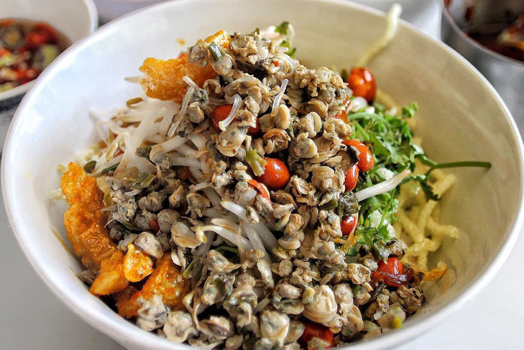
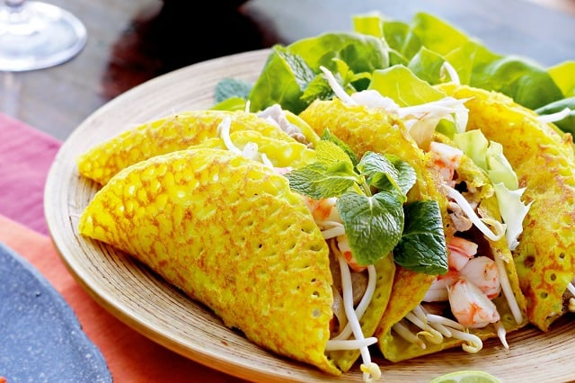
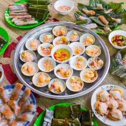

MỤC LỤC:Top những món ăn đặc sản Huế ngon và nổi tiếng nhất
Ăn gì ở Huế? Chắc hẳn câu trả lời đầu tiên bạn nhận được chính là bún bò, một món ăn đặc sản Huế nổi tiếng bậc nhất xứ này. Bún bò Huế mang một hương vị đặc trưng riêng mà không nơi nào có được, đó là vị ngọt thanh của gia vị cùng với mùi sả, ruốc, nước dùng, thịt luộc ăn kèm với rau thơm, chanh, tiêu, nước mắm… tạo nên sức hấp dẫn tới lạ lùng.

Không khó để tìm một quán bún bò Huế, điều đặc biệt là càng những quán bún bình dân thì chất lượng càng tuyệt vời, mà giá cả lại vô cùng phải chăng. Nhắc tới những địa chỉ ăn bún bò Huế ngon nhất, có lẽ phải kể đến những nơi sau:
Cơm hến là món ăn đặc sản Huế mang đậm hương vị đậm đà của người dân xứ Huế và cũng chỉ ở Huế mới có món này. Nguyên liệu để nấu cơm hến rất đơn giản, chỉ bao gồm cơm trắng nấu chín, để nguội rồi ăn cùng với thịt hến, gia vị và tóp mỡ chiên giòn. Bạn có thể ăn kèm với rau sống như hoa chuối, giá đỗ, lạc rang hay khoai môn trắng thái nhỏ. Giá một suất cơm hến rất phải chăng, chỉ khoảng 15.000 đồng trở lên.
Để tìm địa chỉ thưởng thức cơm hến ngon các bạn nên tới một trong những nơi sau:
Món ăn ngon ở Huế này nhìn khá giống bánh bèo Nam Bộ về hình thức, nhưng thực chất nó khác nhau rất nhiều. Bánh khoái Huế nhỏ dơn, dày hơn và cũng giòn hơn bánh xèo, và lý do là do cách pha bột rất độc đáo, chiên ở lửa vừa phải, thêm vào đó là nước chấm bánh là nước lèo béo ngậy, có vị đặc trưng, ăn mãi không quên.
Huế có gì ăn ngon? Nếu có dịp đến Huế thì đừng bỏ qua cơ hội thưởng thức chiếc bánh giòn tan, thơm phức, nhất là trong những tiết trời lạnh giá thì không có gì có thể sánh bằng. Địa chỉ ăn bánh khoái Huế ngon nhất:
Bánh bèo, nậm, bánh lọc Huế là món ăn dân dã nổi tiếng ở Huế, bởi vị ngon, bùi, không béo và không ngán, rất hợp khẩu vị từ người già đến trẻ nhỏ và là loại bánh thường được người Huế sử dụng để cúng trong các ngày rằm hay đầu tháng.
Dưới đây là một số quán bèo nậm lọc đúng vị xứ Huế, không ngon không lấy tiền: